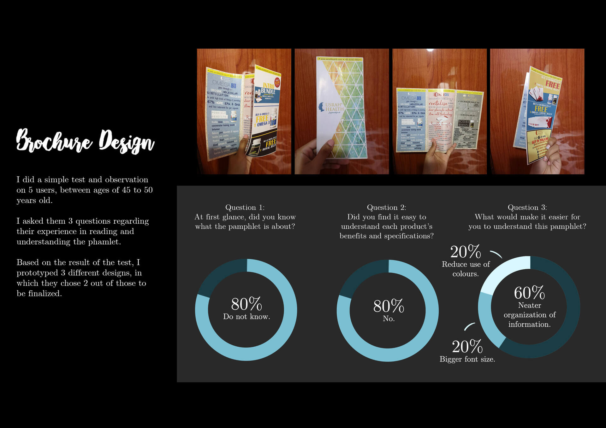

<div id="ajax-page" class="ajax-page-content">
    <div class="ajax-page-wrapper">
        <div class="ajax-page-nav">
            <div class="nav-item ajax-page-prev-next">
            <a class="ajax-page-load" href="04.html"><i class="lnr lnr-chevron-left"></i></a>
                <a class="ajax-page-load" href="06.html"><i class="lnr lnr-chevron-right"></i></a>
            </div>
            <div class="nav-item ajax-page-close-button">
                <a id="ajax-page-close-button" href="#"><i class="lnr lnr-cross"></i></a>
            </div>
        </div>

        <div class="ajax-page-title">
            <h1>Preternatural</h1>
        </div>

        <div class="row">
            <div class="col-sm-7 col-md-7 portfolio-block">
                <div class="portfolio-page-video embed-responsive embed-responsive-16by9">
                  <iframe class="embed-responsive-item" src="https://www.youtube.com/embed/kvmjGaErTFo"></iframe>
                </div>
                <div class="portfolio-page-image">
                  <a href="portfolio/05_01.jpg" target="_blank" title="05_01">
                    
                  </a>
                </div>
                <div class="portfolio-page-image">
                  <a href="portfolio/05_02.jpg" target="_blank" title="05_02">
                    
                  </a>
                </div>
                <div class="portfolio-page-image">
                  <a href="portfolio/05_03.jpg" target="_blank" title="05_03">
                    
                  </a>
                </div>
                <div class="portfolio-page-image">
                  <a href="portfolio/05_04.jpg" target="_blank" title="05_04">
                    
                  </a>
                </div>
                <div class="portfolio-page-image">
                  <a href="portfolio/05_05.jpg" target="_blank" title="05_05">
                    
                  </a>
                </div>
            </div>

            <div class="col-sm-5 col-md-5 portfolio-block">
                <!-- Project Description -->
                <div class="project-description">
                    <div class="block-title">
                        <h3>Description</h3>
                    </div>
                    <ul class="project-general-info">
                        <li><p><i class="fa fa-user"></i> Syafiqah Zailani</p></li>
                        <li><p><i class="fa fa-calendar"></i> 2019</p></li>
                    </ul>

                    <p class="text-justify">Preternatural is a 3rd person explorative psychological horror experience game with puzzle elements where players interact with objects to explore a seemingly abandoned mansion while unfolding a certain story behind it.
Developed by Team M.O.P
M.O.P Members:
Isaac Chan - Producer, Camera Programmer
Muhammad Taufiq bin Arshad - UX Designer, Gameplay Programmer
Haris Lim Hao Li - UI & Gameplay Programmer
Kwan Wai Teng - Lights & Audio Programmer
Tang Wei Ze - Narrative Designer, 3D Modeller & Animator
Muhammad Nur'uljati Syarief - Level Designer, 3D Modeller
Nurul Syafiqah Zailani - Concept Artist, 3D Modeller & Animator
Digipen Institute of Technology
All content © 2018 DigiPen Institute of Technology Singapore. All Rights Reserved</p>
                    <!-- /Project Description -->

                    <!-- Technology -->
                    <div class="tags-block">
                        <div class="block-title">
                            <h3>Software Used</h3>
                        </div>
                        <ul class="tags">
                            <li><a>Photoshop</a></li>
                            <li><a>Unity</a></li>
                            <li><a>Maya</a></li>
                        </ul>
                    </div>
                    <!-- /Technology -->
                </div>
                <!-- Project Description -->
            </div>
        </div>
    </div>
</div>
